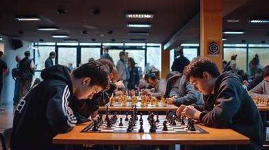

Șahul nu este doar un simplu joc de masă, ci un adevărat sport al minții care aduce multiple avantaje intelectuale, emoționale și psihologice celor care îl practică regulat.

Fiecare partidă de șah necesită anticipare. Jucătorii trebuie să gândească cu câteva mutări înainte, să își construiască planuri pe termen lung și să își adapteze strategia în funcție de mutările adversarului. Acest lucru antrenează creierul să gândească logic și structurat.
Șahul implică reținerea unor tipare complexe de joc, a unor deschideri studiate și a mutărilor anterioare. O partidă intensă necesită o atenție distributivă ridicată și o concentrare profundă pe parcursul a zeci de minute sau chiar ore, mărind capacitatea de focusare pe termen lung.
Studiile arată că șahul stimulează atât emisfera stângă a creierului (responsabilă de logică, recunoaștere a modelelor și calcul matematic), cât și cea dreaptă (responsabilă de intuiție, creativitate și imaginație vizuală).
Deoarece fiecare jucător are un timp limitat de gândire și o singură șansă de a lua decizia corectă, șahul învață oamenii să își păstreze calmul în situații stresante, să analizeze riscurile și să accepte responsabilitatea propriilor greșeli.